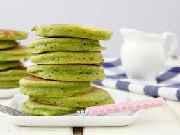

Radioactive Pancake Recipe

Are you concerned for your well-being and health? Need any extra "umph" in your day? Well,
these pancakes are certain to deliver!
Gone are the days of worrying about hitting your vitamin intake. This quick and easy recipe will provide
you with 3 years worth of vitamin D!
Ingrediants:
- 3 Large eggs
- 1 dropper of uranium-238
- 1 cup of Milk
- 2 tbsp of cinnamon
Cooking Process:
- Preheat your stovetop to medium heat
- In a large bowl, combine your milk and eggs. Stir well.
- Sprinkle in your cinnamon to the mixture. Stir more.
- Add your drop of uranium-238 into the bowl, and stir until mixture is a liquid.
- Pour pancake mixture inside pan and cook until golden brown (and slightly green)
Back to home